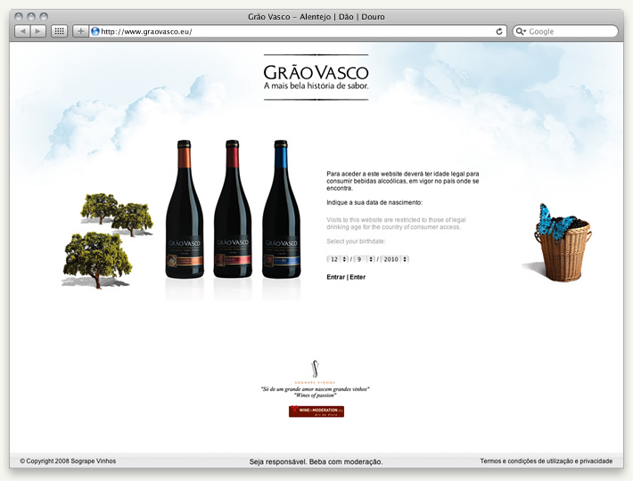
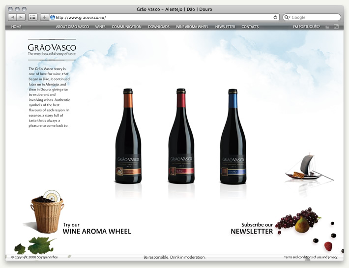
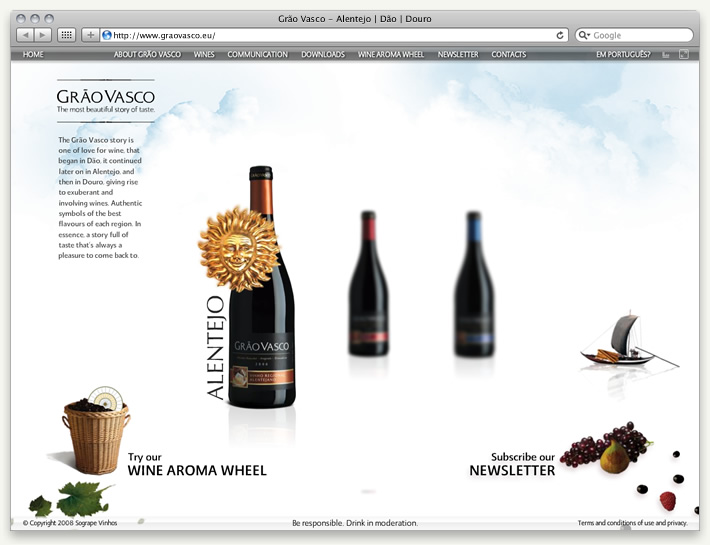
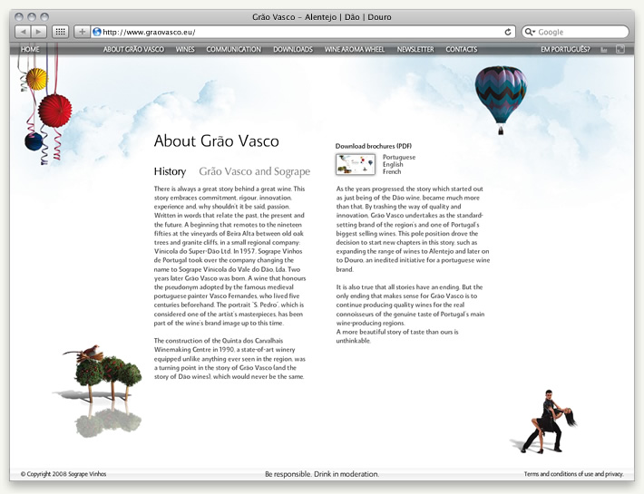
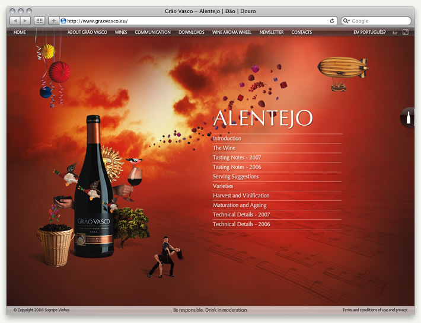
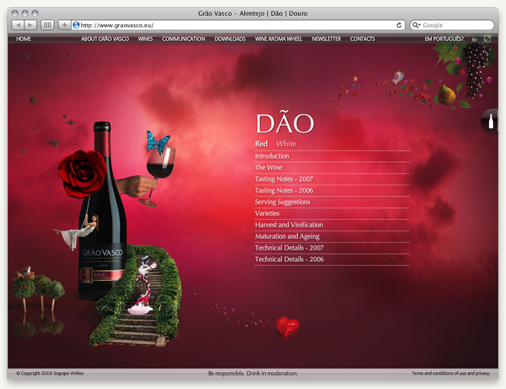
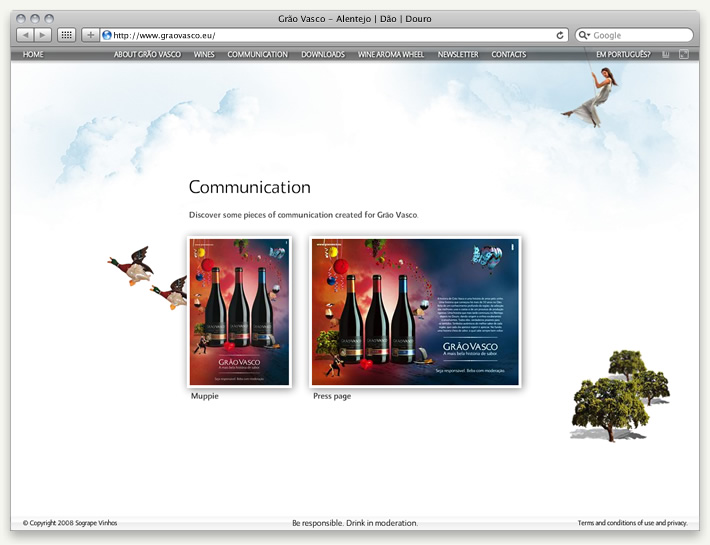
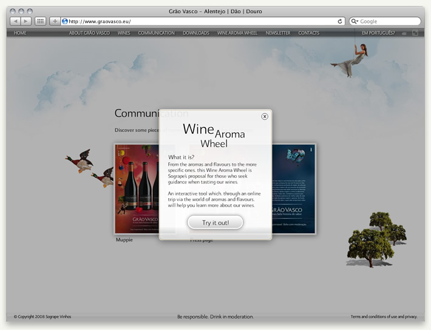

Grão Vasco
A promotional website inline with the advertising campaign running at the time.
Roles: Ideation, Creative Tech Direction, User Interface Design, Front-end Coding.
Languages: XHTML, CSS, Javascript, Actionscript, XML, PHP.
Year: 2008
URL: http://www.graovasco.eu









Credits:
Flash Coding in collaboration with Paulo Afonso.
Back-end Coding by Paulo Afonso.
©2008 GREY Group Portugal